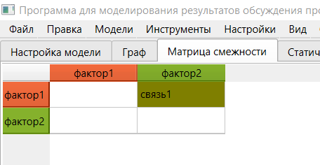

1. Построение НКК на основе матрицы смежности осуществляется на вкладке построения НКК на основе матрицы смежности. Для перехода на эту вкладку с другой вкладки необходимо нажать на заголовок «Матрица смежности».

2. Следует отметить, что в результате предыдущей настройки НКК на вкладке построения НКК графическим методом структура НКК отображается на данной вкладке.
3. Данная вкладка предназначена для удобного создания связей. Связь может быть создана посредством нажатия левой кнопкой мыши на соответствующую пустую белую ячейку. Фактор, являющийся заголовком строки, представляет собой фактор, из которого связь выходит. Соответственно, фактор, являющийся заголовком столбца, представляет собой фактор, в который связь входит. После нажатия на ячейку создание связи происходит аналогично работе с графической областью. При этом при применении результатов ячейка закрашивается цветом, соответствующим цвету выбранного терма связи.
4. При нажатии левой кнопкой мыши на заполненную ячейку осуществляется редактирование связи с особенностями аналогичными работе с графической областью.
5. Данная вкладка не предназначена для создания факторов. Данная функция доступна только на вкладке построения НКК графическим методом.
6. При нажатии левой кнопкой мыши на фактор-заголовок осуществляется редактирование фактора с особенностями аналогичными работе с графической областью.